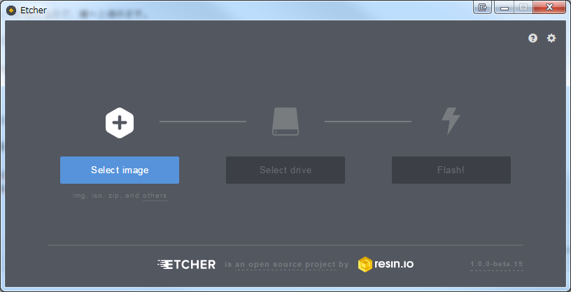

Introduction
ようやくIoTデビューです。
やがては、Windows 10 IoT とか使って何かしたいです。
が、Raspberry Piは初めてなので、下記を参考にしてセットアップしました。
有益な情報ありがとうございます。
用意するもの
- Raspberry Pi 3 Model B
- マイクロSDカード
- OS
- 電源アダプタ
- LANケーブル
以上。
マウスとキーボード、ディスプレイは使いません。
接続が面倒なので。
Raspbianのダウンロード
何はともあれ、OSを入手。
公式サイトである下記から入手できます。
2017/04/14の時点で、最新版は2017-04-10です。
RASPBIAN JJESSIE WITH PIXELとRASPBIAN JESSIE LITEと違いは初期状態で入っているパッケージの違いです。
大きいのはGUIの有無です。
今回はRASPBIAN JJESSIE WITH PIXELを選択。
約1.5GBあります。
混雑しているので、ミラーサイトを利用したほうが無難です。ほとんどつながりませんでしたし、回線激重でした。
混雑しているとこんなお詫びが。
{kind=link}
ミラーサイトはこちら。
SDカードの初期化
WindowsのExplorerからでも初期化できますが、最適な性能を得るために専用ソフトを使いましょう、とGoogle先生に言われたので従います。
でも下記のツールでフォーマットしてもFAT32だった。意味なくね? ダウンロードはSDカードフォーマッター Windows用から。
Install Sheildのセットアップが始まるので、粛々と進めます。
初期化は特に説明は不要なほど簡単なので省略。
OSの書き込み
Etcherという非常にUIの美しい書き込みツールがあるので、それを使いましょう。しかもポータブル版があるのが最高。
公式サイトは下記。
2017/04/14の時点で、最新版は1.0.0-beta.19です。
画面はこんなの。

使い方は簡単。
{kind=link}
- 左端の Select image でダウンロードしたRASPBIANのzipを選択
- 中央の Select drive でSDカードを挿入したドライブを選択
- 右端の Flash! で書き込み
以上。簡単です。素晴らしい。
SSHを有効にする
マウスやキーボードはつなぎたくないので、SSHをデフォルトで有効にします。
が、途中のバージョンでSSHが初期状態で無効になった模様。
以下の記事を参考に回避します。
要するに、作成したSDカードの /boot に ssh という空のフォルダを作成する、というだけです。
下記のような感じ。
{kind=link}
作成が終わったら、SDカード、LANケーブルをRaspberry Piに差し込み、電源アダプタを接続します。
すると自動で起動します。
IPを探索
SSHで接続するには、IPが必要ですが、まだログインしていないし、マウス、キーボードはおろか、ディスプレイもないのでIPがわかりません。
なので、ルータのログとか情報、または何かしらツールでIPを調べます。
有線NICのMACアドレスは B8:27:EB で始まる値のようです。
下記を参考にしました。
ですので、ルータからの接続情報を見たら
{kind=link}
みたいになります。
SSHでログイン
Windows 10 Anniversary Updateがあったので、Bash on Ubuntu on Windowsでログイン。
こんな感じ。
1 | XXXXXX@YYYYYYY:~$ ssh pi@192.168.11.17 |
初期パスワードは raspberry です。
ログインが終わったら変更しましょう。
変更手順はいつか….